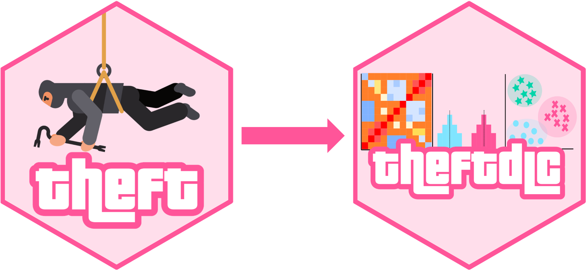
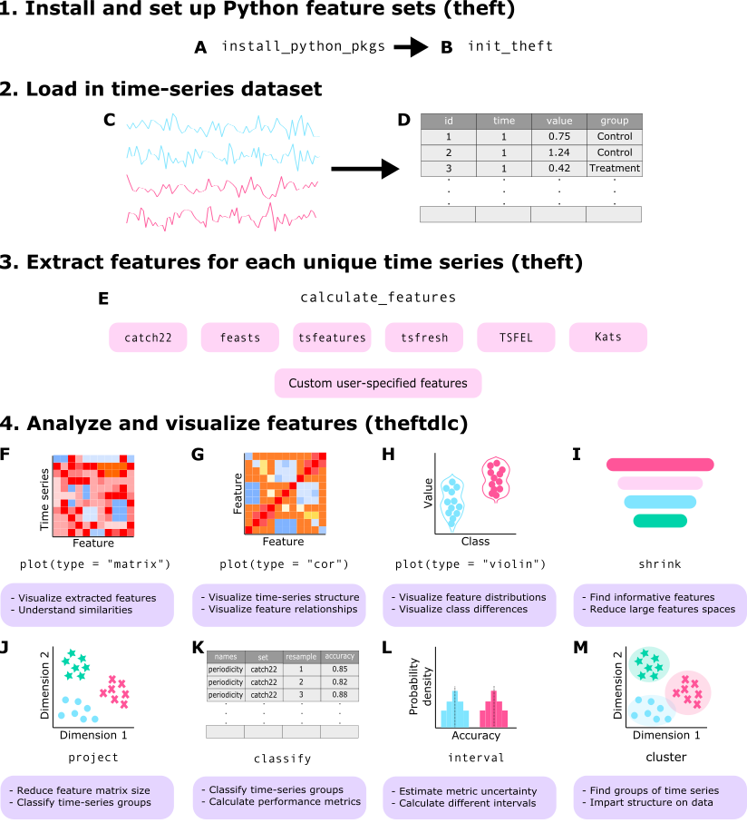
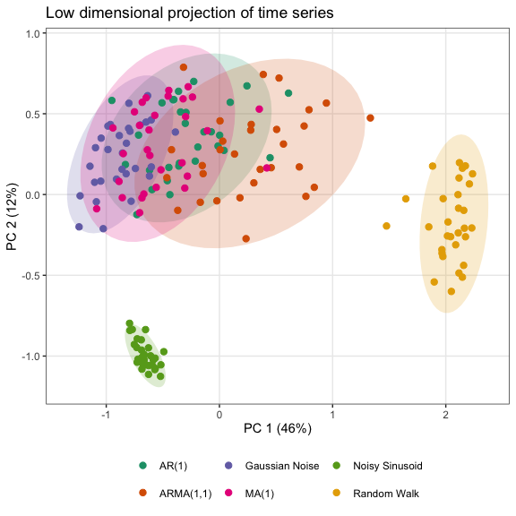

theftdlc: Analyze and Interpret Time Series Features

theftdlc is an R package for analyzing, interpreting, and visualizing time-series features calculated with theft. It covers data-quality checks, normalization, low-dimensional projections, clustering, feature selection, time-series classification, and statistical hypothesis testing for comparing feature sets. theftdlc is the “downloadable content” (DLC) for theft, just like the DLC you get for video games.
📖 Full documentation: hendersontrent.github.io/theftdlc, including the vignette and function reference. 📄 Paper: “Feature-Based Time-Series Analysis in R using the Theft Ecosystem” describes the methods and walks through the full workflow.
Installation
Install the stable version from CRAN:
install.packages("theftdlc")Or install the development version from GitHub:
devtools::install_github("hendersontrent/theftdlc")theftdlc depends on theft (version 0.8.1 or later), which provides the feature_calculations objects that its functions take as input. See the theft README for how to install the Python-based feature sets that theft can use.
Functions
| Function | What it does |
|---|---|
plot() |
Plots a feature_calculations object (data quality, feature matrix, correlations, distributions), a projection from project(), or an interval summary from interval()
|
project() |
Projects the feature matrix into two dimensions with PCA, MDS, t-SNE, or UMAP, after normalization |
cluster() |
Clusters time series using their feature vectors |
filter_duplicates() |
Removes duplicate features that exist in more than one feature set |
classify() |
Fits classifiers using features (by feature set or by individual feature) with a resampling approach, optionally with null models |
compare_features() |
Tests classification performance, comparing each set or feature against its null model, or against each other (pairwise), using the corrected resampled t-test of correctR |
interval() |
Summarizes classification results with a measure of central tendency and an interval |
shrink() |
Selects features with a cross-validated penalized generalized linear model |
Features are normalized with normaliseR. Older function names remain available as aliases: tsfeature_classifier() for classify(), calculate_interval() for interval(), and reduce_dims() for project().
The theft ecosystem
Collectively, theft and theftdlc are the “theft ecosystem”. theft extracts features from seven feature sets ("catch22", "feasts", "kats", "tsfeatures", "tsfresh", "tsfel", and "hctsa") and from any number of user-supplied features, and theftdlc does everything after that.

A high-level view of how the ecosystem is typically used:

Many more functions and options are available in the packages.
Quick tour
theft and theftdlc combine into an efficient tidy workflow. The code below calculates features using catch22 and a custom set of the mean and standard deviation, then projects the feature space into two dimensions using principal components analysis:
library(dplyr)
library(theft)
library(theftdlc)
calculate_features(data = theft::simData,
feature_set = "catch22",
features = list("mean" = mean, "sd" = sd)) %>%
project(norm_method = "RobustSigmoid",
unit_int = TRUE,
low_dim_method = "PCA") %>%
plot()
Here calculate_features() comes from theft, while project() and the plot() method come from theftdlc.
In the same way, we can compare the time-series classification performance of catch22 against our custom set of the first two moments:
calculate_features(data = theft::simData,
feature_set = "catch22",
features = list("mean" = mean, "sd" = sd)) %>%
classify(by_set = TRUE,
n_resamples = 5,
use_null = TRUE) %>%
compare_features(by_set = TRUE,
hypothesis = "null") %>%
head() hypothesis feature_set metric set_mean null_mean t_statistic
1 User != own null User accuracy 0.5466667 0.09333333 3.631296
2 catch22 != own null catch22 accuracy 0.7377778 0.15111111 5.794157
p.value
1 0.011067234
2 0.002205415classify() and compare_features() come from theftdlc.
See the vignette for more information and the full functionality of both packages.
Citing theftdlc
If you use theft or theftdlc, please cite both the paper:
T. Henderson and B. D. Fulcher. “Feature-Based Time-Series Analysis in R using the Theft Ecosystem”. The R Journal 17(3), 43-68 (2025).
BibTeX version:
@article{RJ-2025-023,
author = {Henderson, Trent and Fulcher, Ben D.},
title = {Feature-Based Time-Series Analysis in R using the Theft Ecosystem},
journal = {The R Journal},
year = {2025},
note = {https://doi.org/10.32614/RJ-2025-023},
doi = {10.32614/RJ-2025-023},
volume = {17},
issue = {3},
issn = {2073-4859},
pages = {43-68}
}and the software:
To cite package 'theft' in publications use:
Henderson T (2026). _theft: Tools for Handling Extraction of Features
from Time Series_. R package version 0.9.0,
<https://hendersontrent.github.io/theft/>.
A BibTeX entry for LaTeX users is
@Manual{,
title = {theft: Tools for Handling Extraction of Features from Time Series},
author = {Trent Henderson},
year = {2026},
note = {R package version 0.9.0},
url = {https://hendersontrent.github.io/theft/},
}
To cite package 'theftdlc' in publications use:
Henderson T (2026). _theftdlc: Analyse and Interpret Time Series
Features_. R package version 0.2.2,
<https://hendersontrent.github.io/theftdlc/>.
A BibTeX entry for LaTeX users is
@Manual{,
title = {theftdlc: Analyse and Interpret Time Series Features},
author = {Trent Henderson},
year = {2026},
note = {R package version 0.2.2},
url = {https://hendersontrent.github.io/theftdlc/},
}License
theftdlc is licensed under the MIT License.